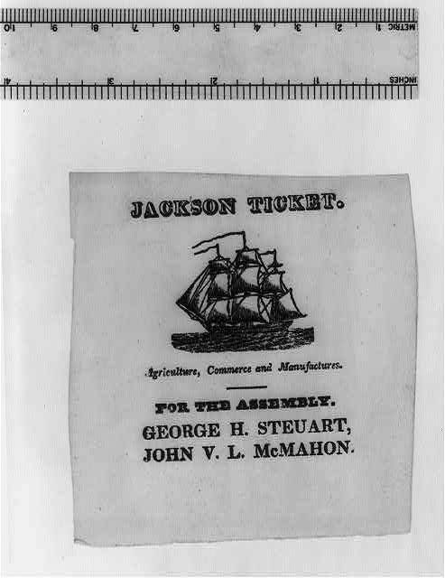

PRIMARY SOURCE S10.62
Cartoons of the Bank War’s Aftermath: Treasury Note (1837), All on Hobbies (1838), The Almighty Lever (1840), and Two Jackson Election Tickets (1828)
Henry R. Robinson, Edward Williams Clay, John Childs, and unknown printers · 1828–1840 (lithographs and woodcut election tickets)
| Field | Detail |
| TOC Fit | Chapter 10 · Essay prompt 10.4 (The Bank War and the Panic of 1837); Essay prompt 10.5 (Judging Jackson's Presidency) |
| Why Here | A set of popular images that follow the money question from Jackson’s first campaign through the Panic of 1837 to the Whig victory of 1840. Students can compare how opponents blamed Jackson’s and Van Buren’s hard-money policies for the hard times, how cartoonists mocked every party’s pet issue, and how Jackson’s 1828 supporters had promised prosperity for farmers, merchants, and manufacturers alike. |
| Treatment | Public-domain images; printed text and speech balloons as transcribed in the repository records |
Historical Context
After Jackson destroyed the Second Bank of the United States and issued the Specie Circular (1836), requiring gold or silver for most purchases of public land, a speculative boom collapsed. In May 1837 New York banks suspended specie payments, and the country entered a long depression. Businesses and towns issued small paper notes, mocked as “shinplasters,” to make up for scarce coin. Whigs blamed the crisis on Jacksonian finance, while Martin Van Buren pressed for an Independent Treasury that would keep federal money out of banks altogether. New York lithographers such as Henry R. Robinson and Edward Williams Clay sold cartoons on these questions to a wide public. Treasury Note mimics a shinplaster to blame Jackson and Van Buren; All on Hobbies pokes fun at leaders of both parties riding their favorite causes; The Almighty Lever celebrates the 1840 “log cabin and hard cider” campaign that elected William Henry Harrison. The two small 1828 election tickets show how Jackson’s first campaign had courted voters with promises of broad economic prosperity. Editorial note. The Norton Online Reader images could not be consulted for this reader, so the exact prints Norton uses could not be confirmed. The four cartoons were identified by title in the Library of Congress: Treasury Note (1837), All on Hobbies, Gee Up, Gee Ho! (1838), and The Almighty Lever (1840). Norton’s “Jackson Ticket-System / Ticket-Industry” is taken to be two of the 1828 Jackson election tickets in the Library’s Broadside Collection, “American system. Speed the plough, the loom & the mattock” and “Agriculture, commerce and manufactures” (the Library holds two tickets with the second slogan; the one with a sailing ship, LC-USZ61-1452, is recorded here). The tickets date from 1828, outside the 1837–1840 range given in the plan. Speech balloons and banner text are reproduced from the Library of Congress catalog descriptions (public-domain federal transcriptions); they are partial and should be checked against the images. In Treasury Note the second speaker is unnamed (the Library suggests Reuben Whitney or Levi Woodbury); the bracketed “[the horse]” in Harrison’s line is the cataloger’s. CAUTION: These are partisan images made to persuade and to sell; read them as arguments, not as descriptions of events. |
Document Text
Printed text and speech balloons (as transcribed in the Library of Congress catalog records)
Treasury Note (H. R. Robinson, 1837)
Andrew Jackson: “I did not think John C. could crack such a good whip.”
Second figure: “Oh! Matty has had him in training, the nullifying turncoat.”
All on Hobbies, Gee Up, Gee Ho! (Edward Williams Clay, 1838)
Henry Clay: “Either you or I must get off Dan, for this horse wont carry double!”
Daniel Webster: “Dash my Whig if I get off Hal!”
Thomas Hart Benton: “My Golden Poney carries more weight than any of them!”
William Henry Harrison: “. . . unless there is another Morgan abduction, I'm afraid he'll [the horse] lose his wind!”
John Quincy Adams: “This horse, instead of being my Topaz, is my Ebony.”
The Almighty Lever (Edward Williams Clay, 1840)
Eagle’s banner: “With a log cabin and barrel of hard Cider for a fulcrum, public opinion for a ‘lever,’ with old Tip on the tip end the ball of Locofocoism will be rolled into oblivion and a gallant soldier raised to the white house. March 4th 1841.”
Two Jackson election tickets (1828)
Jackson ticket. American system. Speed the plough, the loom & the mattock
Jackson ticket. Agriculture, commerce and manufactures
Primary Source Images
![Treasury Note. Lithograph, signed Napoleon Sarony ([New York]: H. R. Robinson, 1837). Library of Congress Prints and Photographs Division, PC/US - 1837.R661, no. 47 (B size).](Images/S10.62_1.jpg)
|
Treasury Note. Lithograph, signed Napoleon Sarony ([New York]: H. R. Robinson, 1837). Library of Congress Prints and Photographs Division, PC/US - 1837.R661, no. 47 (B size).

|
All on Hobbies, Gee Up, Gee Ho! Lithograph, Edward Williams Clay (New York: H. R. Robinson, 1838). Library of Congress Prints and Photographs Division, PC/US - 1838.C619, no. 19 (B size).

|
The Almighty Lever. Lithograph, Edward Williams Clay (New York: John Childs, 1840). Library of Congress Prints and Photographs Division, PC/US - 1840.C5378, no. 5 (B size).

|
Jackson Ticket. American System. Speed the Plough, the Loom & the Mattock. Woodcut with letterpress election ticket (1828). Library of Congress, Rare Book and Special Collections Division, Broadside Collection, portfolio 192, no. 12c.
|
 |
Jackson Ticket. Agriculture, Commerce and Manufactures. Woodcut with letterpress election ticket (1828). Library of Congress, Rare Book and Special Collections Division, Broadside Collection, portfolio 192, no. 12c.
Chicago Citations
Treasury Note (1837)
Bibliography Entry
Robinson, Henry R., publisher. Treasury Note. Lithograph, signed Napoleon Sarony. [New York]: H. R. Robinson, 1837. Library of Congress Prints and Photographs Division, PC/US - 1837.R661, no. 47 (B size). https://www.loc.gov/pictures/item/2008661305/.
Footnote Citation (Example)
1. Treasury Note, lithograph, signed Napoleon Sarony ([New York]: H. R. Robinson, 1837), Library of Congress Prints and Photographs Division, LC-USZ62-1566, https://www.loc.gov/pictures/item/2008661305/.
Shortened Citation
Treasury Note.
All on Hobbies, Gee Up, Gee Ho! (1838)
Bibliography Entry
Clay, Edward Williams. All on Hobbies, Gee Up, Gee Ho! Lithograph. New York: H. R. Robinson, 1838. Library of Congress Prints and Photographs Division, PC/US - 1838.C619, no. 19 (B size). https://www.loc.gov/pictures/item/2008661313/.
Footnote Citation (Example)
1. Edward Williams Clay, All on Hobbies, Gee Up, Gee Ho!, lithograph (New York: H. R. Robinson, 1838), Library of Congress Prints and Photographs Division, LC-USZC4-8005, https://www.loc.gov/pictures/item/2008661313/.
Shortened Citation
Clay, All on Hobbies.
The Almighty Lever (1840)
Bibliography Entry
Clay, Edward Williams. The Almighty Lever. Lithograph. New York: John Childs, 1840. Library of Congress Prints and Photographs Division, PC/US - 1840.C5378, no. 5 (B size). https://www.loc.gov/pictures/item/2008661393/.
Footnote Citation (Example)
1. Edward Williams Clay, The Almighty Lever, lithograph (New York: John Childs, 1840), Library of Congress Prints and Photographs Division, LC-USZ62-5569, https://www.loc.gov/pictures/item/2008661393/.
Shortened Citation
Clay, Almighty Lever.
Jackson ticket: American system (1828)
Bibliography Entry
Jackson Ticket. American System. Speed the Plough, the Loom & the Mattock. Woodcut with letterpress election ticket. 1828. Broadside Collection, portfolio 192, no. 12c, Rare Book and Special Collections Division, Library of Congress. https://www.loc.gov/pictures/item/2008661740/.
Footnote Citation (Example)
1. Jackson Ticket. American System. Speed the Plough, the Loom & the Mattock, election ticket (1828), Library of Congress, LC-USZ61-1447, https://www.loc.gov/pictures/item/2008661740/.
Shortened Citation
Jackson Ticket. American System.
Jackson ticket: Agriculture, commerce and manufactures (1828)
Bibliography Entry
Jackson Ticket. Agriculture, Commerce and Manufactures. Woodcut with letterpress election ticket. 1828. Broadside Collection, portfolio 192, no. 12c, Rare Book and Special Collections Division, Library of Congress. https://www.loc.gov/pictures/item/2008661737/.
Footnote Citation (Example)
1. Jackson Ticket. Agriculture, Commerce and Manufactures, election ticket (1828), Library of Congress, LC-USZ61-1452, https://www.loc.gov/pictures/item/2008661737/.
Shortened Citation
Jackson Ticket. Agriculture.
Image Credits, Rights, and Related Links
Library of Congress Prints and Photographs Division, LC-USZ62-1566. Rights: No known restrictions on publication (Library of Congress). https://www.loc.gov/pictures/item/2008661305/.
Library of Congress Prints and Photographs Division, LC-USZC4-8005. Rights: No known restrictions on publication (Library of Congress). https://www.loc.gov/pictures/item/2008661313/.
Library of Congress Prints and Photographs Division, LC-USZ62-5569. Rights: No known restrictions on publication (Library of Congress). https://www.loc.gov/pictures/item/2008661393/.
Library of Congress, LC-USZ61-1447. Rights: No known restrictions on publication (Library of Congress). https://www.loc.gov/pictures/item/2008661740/.
Library of Congress, LC-USZ61-1452. Rights: No known restrictions on publication (Library of Congress). https://www.loc.gov/pictures/item/2008661737/.